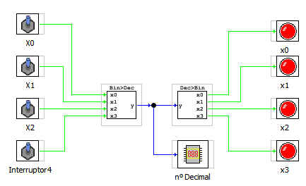

Este bloque se encarga de convertir una número binario en su equivalente numérico.
El bloque contrario es el que convierte un número entero en su equivalente binario.
Las entradas son de tipo binario x0... x3
La salida es un número entero.
